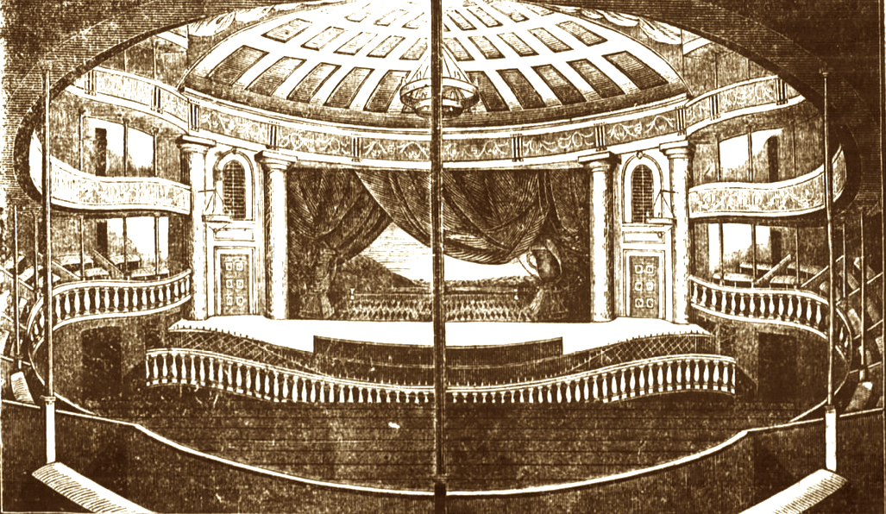

Broadway had its very first beginnings in the early 1900s, the decade marking when Broadway gradually became so well-known and a key role in American theater. Broadway had its start in New York City, and thanks to being in a highly populated city, it became slowly but surely known to many people as people got into its great shows and performances. Because of this, Broadway boomed and became the theater we know and love today.
"Broadway is where stories become timeless."
With the many, many famous musicals and plays that Broadway has housed over the past hundred years, they have influenced how stories are made and performed up to today!
As of Today, Broadway continues to grow and evolve by introducing new stories, diverse voices, and breathtaking performances that bring millions of visitors each year from around the world.
Why Broadway Matters
- It influences entertainment trends around the world.
- It provides a lot of opportunities for actors, writers and designers
- It preserves storytelling through live performances.
- It is the highest level of production in theater